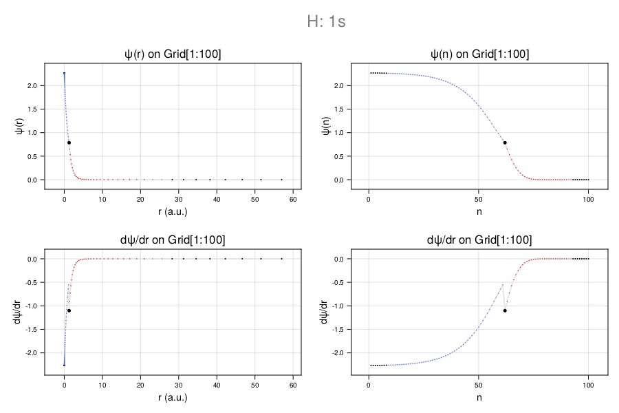
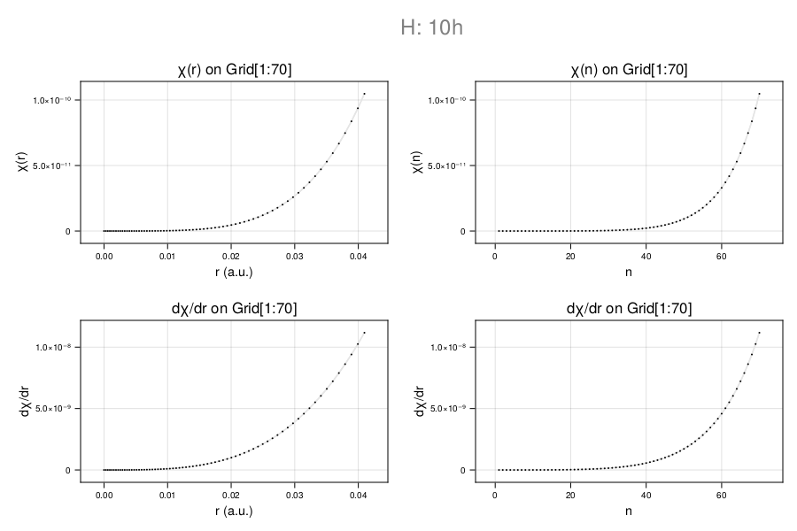

Numerical integration
The Adams-Moulton method is used for numerical integration of the reduces radial wave equation. In the present implementation it is constructed on top the objects Atom, Orbit, CamiDiff.Grid, Def and Adams using 5 globally defined instances called atom, orbit, grid, def and adams.
Adams
The Adams object serves to hold the Adams-Moulton integration matrices matG, matσ, matMinv as well as the actual normalized solution Z in the form of a tabulated function of N elements.
CamiXon.Adams — TypeAdams{T}- G: (
:Vector{Matrix{T}}) - σ: (
:Vector{Matrix{T}}) - Minv: (
:Vector{Matrix{T}})
CamiXon.castAdams — MethodcastAdams(E::T, grid::CamiDiff.Grid{T}, def::Def{T}) where T<:RealInitiates the Adams object.
CamiXon.updateAdams! — MethodupdateAdams!(adams::Adams{T}, E::T, grid::CamiDiff.Grid{T}, def::Def{T}) where T<:RealUpdate Adams object.
Adams related functions
CamiXon.matG — MethodmatG(E::T, pot::Vector{T}, grid::CamiDiff.Grid{T}) where T<:Realcoupling matrix - Johnson (2.54)
CamiXon.matσ — Methodmatσ(E::T, grid::CamiDiff.Grid{T}, def::Def{T}) where T<:Realcoupling matrix - Johnson (2.54)
CamiXon.matMinv — MethodmatMinv(E::T, grid::CamiDiff.Grid{T}, def::Def{T}) where T<:RealAdams-Moulton correction matrix - Johnson (2.56)
Adams-Moulton integration
CamiXon.adams_moulton_solve! — Methodadams_moulton_solve!(Z::Vector{Complex{T}}, E::T, grid::CamiDiff.Grid{T}, def::Def{T}, adams::Adams1{T}) where T<:RealNumerical solution of the 1D Schrödinger equation for the radial motion of a valence electron of energy E. Output: the improved Adams object, the energy convergence ΔE, and Z, where P = real(Z) is the reduced radial wavefunction and Q = imag(Z) its derivative.
Example:
atom = castAtom(Z=1, A=1, Q=0, msg=true)
orbit = castOrbit(n=1, ℓ=0)
grid = autoGrid(atom, orbit, Float64; Nboost=1, msg=true)
def = castDef(grid, atom, orbit, codata)
E = Ecal = convert(grid.T, bohrformula(atom.Z, orbit.n))
adams = castAdams(E, grid, def);
adams, ΔE, Z = adams_moulton_solve(E, grid, def, adams)
plot_wavefunction(Z, 1:grid.N, grid, def; reduced=true)The plot is made using CairomMakie. NB.: plot_wavefunction is not part of the CamiXon package. 
CamiXon.adams_moulton_solve_refine! — Methodadams_moulton_solve_refine!(Z::Vector{Complex{T}}, E::T, grid::CamiDiff.Grid{T}, def::Def{T}, adams::Adams{T}) where T<:RealRadial integration - outward
CamiXon.OUTSCH! — MethodOUTSCH!(Z::Vector{Complex{T}}, E::T, grid::CamiDiff.Grid{T}, def::Def{T}, adams::Adams{T}) where T<:Real
Ansatz solution for the outward integration of the radial wave equation for the first $k$ points on the CamiDiff.Grid, where $k$ is the Adams-Moulton order. For angular momentum 0 ≤ ℓ ≤ 5 the Walter Johnson Ansatz is used; for $ℓ > 5$ the Ansatz is based on the WKB solution for energy E at distances far below the inner classical turning point - ictp)
Example:
Ecal, grid, def, adams = demo_hydrogen(n=1, ℓ=0)
Z = OUTSCH(Ecal, grid, def, adams.σ)
println("\nZ: standard Ansatz for wavefunction (n < Na=$(def.pos.Na)))")
Orbital: 1s
principal quantum number: n = 1
radial quantum number: n′ = 0 (number of nodes in radial wavefunction)
orbital angular momentum of valence electron: ℓ = 0
CamiDiff.Grid created: exponential, Float64, Rmax = 63.0 a.u., N = 100, h = 0.1, r0 = 0.00286033
Def created for hydrogen 1s on exponential grid
Z: standard Ansatz for wavefunction (n < Na=8))
Ecal, grid, def, adams = demo_hydrogen(n=10, ℓ=5)
Z = OUTSCH(Ecal, grid, def, adams.σ);
println("\nZ: WKB Ansatz for wavefunction (n < Na=$(def.pos.Na)))")
Orbital: 10h
principal quantum number: n = 10
radial quantum number: n′ = 4 (number of nodes in radial wavefunction)
orbital angular momentum of valence electron: ℓ = 5
CamiDiff.Grid created: exponential, Float64, Rmax = 360.0 a.u., N = 550, h = 0.0181818, r0 = 0.0163447
Def created for hydrogen 10h on exponential grid
Z: WKB Ansatz for wavefunction (n < Na=70))
plot_wavefunction(Z, 1:def.pos.Na, grid, def; reduced=true)The plot is made using CairomMakie. NB.: plot_wavefunction is not included in the CamiXon package. 
CamiXon.OUTSCH_WJ! — MethodOUTSCH_WJ!(Z::Vector{Complex{T}}, grid::CamiDiff.Grid{T}, def::Def{T}, adams::Adams{T}) where T<:RealCamiXon.OUTSCH_WKB! — MethodOUTSCH_WKB!(Z::Vector{Complex{T}}, E::T, grid::CamiDiff.Grid{T}, def::Def{T}) where T<:RealCamiXon.adams_moulton_outward! — Methodadams_moulton_outward!(def::Def{T}, adams::Adams{T}) where T<:RealRadial integration - inward
CamiXon.INSCH! — MethodINSCH!(Z::Vector{Complex{T}}, E::T, grid::CamiDiff.Grid{T}, def::Def{T}) where T<:RealAnsatz solution for the inward integration of the radial wave equation for the first $k$ points on the CamiDiff.Grid, where $k$ is the Adams-Moulton order. The Ansatz is based on the WKB solution for energy E at distances far above the upper classical turning point - uctp)
CamiXon.INSCH_WKB! — MethodINSCH_WKB!(Z::Vector{Complex{T}}, E::T, grid::CamiDiff.Grid{T}, def::Def{T}) where T<:RealWKB Ansatz of k+1 points for INSCH!
CamiXon.adams_moulton_inward! — Methodadams_moulton_inward!(E::T, grid::CamiDiff.Grid{T}, def::Def{T}, adams::Adams{T}) where T<:RealRadial integration - boundary condition
CamiXon.adams_moulton_normalize! — Methodadams_moulton_normalize!(Z::Vector{Complex{T}}, ΔQ::T, grid::CamiDiff.Grid{T}, def::Def{T}) where T<:RealAdams-Moulton Master procedures
Ein - the energy object
CamiXon.Ein — TypeEin{T} where T<:RealEnergy object with fields:
.Emin: lower energy limit (::T).E: trial energy (::T).Emax: upper energy limit (::T).ΔE: difference with respect to previous E used to calculate current E (::T)
CamiXon.castEin — MethodcastEin(E::T, def::Def{T}) where T<:RealCreate and initialize the energy object Ein according to the specifications given in the Def object.
.Emin: lower energy limit (::T).E: trial energy (::T).Emax: upper energy limit (::T).ΔE: difference with respect to previous E used to calculate current E (::T)
Adams-Moulton node search
CamiXon.adams_moulton_nodes — Methodadams_moulton_nodes(E::Real, scr::Vector{T}, grid::CamiDiff.Grid{T}, def::Def{T}; imax=25, msg=true) where T<:RealCamiXon.adams_moulton_report_nodes — Methodadams_moulton_report_nodes(i::Int, inE::Ein{T}, grid::CamiDiff.Grid{T}, def::Def{T}, strΔT::String; unitIn="Hartree", msg=true) where T<:RealAdams-Moulton iteration
CamiXon.adams_moulton_iterate! — Methodadams_moulton_iterate!(Z::Vector{Complex{T}}, inE::Ein{T}, grid::CamiDiff.Grid{T}, def::Def{T}, adams::Adams{T}; imax=25, ϵ=1e-6, msg=true) where T<:RealCamiXon.adams_moulton_report_iterate — Methodadams_moulton_report_iterate(i::Int, imax::Int, inE::Ein{T}, ϵ, grid::CamiDiff.Grid{T}, def::Def{T}, strΔT::String; unitIn="Hartree", msg=true) where T<:Real